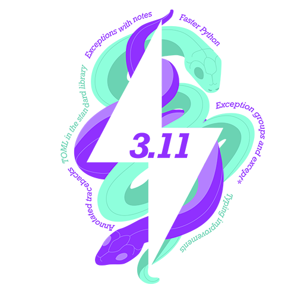

Framework Changes#
{kind=link}

Algorithms#
New features#
PaalmanPingsAbsorptionCorrection v1 has been updated to use beam properties from SetBeam v1 to determine
GaugeVolumeif no volume is defined.CreateDetectorTable now has an optional argument,
IncludeDetectorPosition, which, ifTrue, will add a column,Position, to the end of theDetectorTable. This column has the detector position as aV3Dtype object for each spectrum in the table.Divide v1 now has an optional argument,
IsDistribution, to force the output distribution type.DiffractionFocussing has a new optional boolean parameter
FullBinsOnly. When set, final bins of width less than the step-size are omitted from the output spectra.New algorithm CreateBootstrapWorkspaces v1 creates randomly simulated samples for performing Bootstrap analysis.
The method
getAlwaysStoreInADShas been exposed to python from C++, now accessible from an instance ofPythonAlgorithm. This is a more reliable way thanisChildto check if output workspaces are to be stored in the ADS.A new option has been added to GetIPTS v1 to maintain a list of IPTS for supplied runs. This does not persist across sessions.
In SetGoniometer v1, you can now directly pass a comma separated string of 9 values corresponding to the (row major) flattened rotation matrix.
In MonteCarloAbsorption v1, when a gauge volume has been defined with DefineGaugeVolume v1, the algorithm now uses this gauge volume to generate the scattering points for calculating attenuation within the sample.
AnyShapeAbsorptioncan now determine the gauge volume by using the BeamProfileA new algorithm DebyeWallerFactorCorrectionMD v1 to scale the MDEvents by the inverse of Debye-Waller form factor.
New algorithm CombineTableWorkspaces v1 allows combination of a pair of Table Workspaces, provided they have matching column names and data types.
Introduced a new python algorithm, RefineSingleCrystalGoniometer v1, that refines the UB-matrix and goniometer offsets simultaneously. This improves the indexing of the peaks for those cases when there is sample misorientation and FindUBUsingIndexedPeaks v1 is insufficient.
Bugfixes#
GenerateGroupingPowder now correctly calculates the number of pixels in a group, which may have been incorrect under certain conditions. This could lead to incorrect grouping of pixels in the output workspace. The issue was caused by an incorrect handling of the pixel indices when calculating the groups. The fix ensures that pixel indices are correctly handled, resulting in accurate grouping of pixels in the output workspace.
In the script generated by GeneratePythonFitScript, titles for the subplots have been replaced by meaningful legends so that labels of output subplots do not overlap.
The
Unweighted least squarescost function in Fit v1 now works as expected when compared with the scipy library.As part of the fix a new parameter named
IgnoreInvalidDatadefaulted tofalsehas been introduced into CalculatePolynomialBackground and DirectILLTubeBackground v1 algorithms so that it can be forwarded to the Fit v1 algorithm.In PoldiFitPeaks2D v1, the
IgnoreInvalidDataparameter is defaulted totruewhen invoking Fit v1 to preserve existing behaviour.The
IgnoreInvalidDataparameter defaulted tofalsehas been introduced into ReflectometryBackgroundSubtraction v1.
InstrumentArrayConverterandPeakDatautility classes used in peak integration algorithms have been moved into a common module located atplugins.algorithms.peakdata_utils.py.If using these classes in your scripts,
from plugins.algorithms.IntegratePeaksSkew import InstrumentArrayConverter, PeakDatamust be replaced byfrom plugins.algorithms.peakdata_utils import InstrumentArrayConverter, PeakData.
ConvertUnits now works as expected when the input workspace is a ragged workspaces with point data.
IntegratePeaksShoeboxTOF v1 will no longer throw an out of bounds error when integrating peaks.
Divide v1 now properly clears units when dividing two ragged_workspace with identical Y-axis Units. This issue could cause errors in downstream data reduction workflows where the resulting workspace should be unitless. The fix ensures proper unit handling for ragged_workspace division operations.
GroupDetectors will no longer freeze on large datasets while adding
EventListobjects to the Output Workspace. Testing with TOPAZ-50006 execution time was reduced from 2+ hours to ~30 seconds.LoadAndMerge v1 will no longer store workspaces in the ADS when set not to. This caused the leaking of temporary workspaces in algorithms that call LoadAndMerge v1 as a child. Legacy behaviour can be achieved by passing
StoreInADS=Trueto the algorithm.Add
MandatoryValidator<OptionalBool>to property declaration in the Divide v1 algorithmSaveNexusProcessed will no longer crash due to a slab size to data size mismatch when writing ragged workspaces.
When working with large datasets, SumSpectra will no longer freeze when adding an
EventListof weighted events to theOutputWorkspace.
Deprecated#
IntegratePeaksMD v1 has been deprecated, use IntegratePeaksMD v2 instead.
UnwrapMonitorsInTOF has been deprecated. There is no replacement.
UnwrapSNS has been deprecated. There is no replacement.
Property
UnwrapRefhas been deprecated for algorithms that previously called deprecated algorithm UnwrapSNS v1:LoadEventPreNexus has been deprecated. There is no replacement.
IntegratePeaksCWSD has been deprecated. There is no replacement.
Removed#
The
AlignDetectorsalgorithm was deprecated in Release 6.1 and has now been removed. Please use a combination of ApplyDiffCal and ConvertUnits instead.The
Transpose3Dalgorithm (also known asSINQTranspose3D) was deprecated in Release 3.9.0 and has now been removed. Use TransposeMD v1 instead.Removed the obsolete algorithm
LoadLLB.Removed the obsolete algorithm
SaveISISNexus. It is being removed before the normal comment period rather than undergoing extensive changes to accommodate the consolidation of nexus APIs in mantid.Removed obsolete
LoadDSpacemapandSaveDSpacemapalgorithms.The algorithm
CentroidPeaksMD v1was deprecated in Release 3.9.0 and has now been removed. Use CentroidPeaksMD v2 instead.The algorithm
LoadNexusMonitors v1was deprecated in Release 3.9.0 and has now been removed. Use LoadNexusMonitors v2 instead.The
LoadSNSspecalgorithm was deprecated on 2017-01-30 and has now been removed.Removed the obsolete algorithm
NexusTester
Data Handling#
New features#
LoadSpec has been updated to be declared as a file loader
Deprecated#
Both LoadPreNexus and LoadPreNexusMonitors have been deprecated. There are no replacements.
Removed#
SaveToSNSHistogramNexushas been removed, because it is unused.
Python#
New features#
Instrument.getFilename()andInstrument.setFilename()have been exposed to python.A new method named
getFittingParameterhas been added toMantid::Geometry::Componentclass and exposed to python. This allows access to fitting parameters from components in an instrument definition file.Exposed
ExperimentInfo.populateInstrumentParametersto the Python api. This will facilitate the update of parameterized instruments from Python, allowing parameters to be directly transferred as properties without converting to and fromstring.
Bugfixes#
ConfigService.setDataSearchDirswill no longer crash when comma separated paths are used in thedatasearch.directoriessetting of themantid.user.propertiesfile.mantid.api.Run.addProperty()no longer ignores thenameandunitsparameters if thevalueis of typemantid.kernel.Property. Now only if thenameandunitsare empty will the existing values on thePropertybe used.
Dependencies#
New features#
Upgraded to Python 3.11.
See release notes from Python here.
See Python’s migration guide for changes that could break scripts.
This release has replaced use of the NeXus API with its own implementation that is heavily influenced by that code. There are two main purposes for no longer depending on the NeXus-API:
The API was announced as only undergoing bugfixes as of 2014. The last release was v4.4.3 on 2016-09-12.
In order to make changes to improve performance, Mantid needs to change the underlying implementation calling HDF5.
The net effect is that we have a
Nexusabstraction that only supports HDF5-based files, which are the vast majority of the files that Mantid needs to write, and aLegacyNexusabstraction which has reduced its support to HDF4 and HDF5 based files (droppingxml).Much of this release cycle was spent creating the new abstraction and moving all existing code to use it. Ideally, users should see very little difference. There may be improved performance for files that have many groups/datasets at a level within the file. This is due to an in-memory cache of the data layout.
Those interested in the details of the changes can see them in the (developer centric) github issue.
Build Tools#
Bugfixes#
CMake now successfully builds with
-DUSE_SANITIZER=address. For more details see RunningSanitizers.